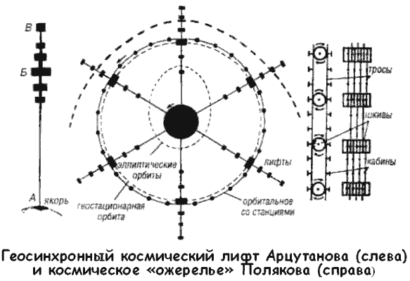

Космическое ожерелье Полякова
В развитие идей Арцутанова свой проект «геосинхронного» космического лифта в 1977 году предложил Георгий Поляков из Астраханского педагогического института. Принципиально этот лифт почти ничем не отличается от вышеописанного — автор лишь проясняет некоторые «туманные места» знаменитой статьи в «Комсомолке», выдвигая по ходу обсуждения ряд рационализаторских предложений.
В частности, Поляков указывает: реальный космический лифт будет устроен куда сложнее, чем описанный Арцутановым.
Фактически он будет состоять из ряда простых лифтов с последовательно уменьшающимися длинами. Каждый представляет собой самоуравновешенную систему, но лишь благодаря одному из них, что достигает Земли, обеспечивается устойчивость всей конструкции.

Основная база, расположенная на высоте 35 800 километров, будет находиться в состоянии невесомости, а потому ее размеры можно назначить достаточно большими: от нескольких сот метров до 10 километров в диаметре. Однако постоянно жить в условиях невесомости не слишком-то удобно, и на базе придется создать искусственное тяготение, придав ей вращение. В таком случае на лифт, кружащийся вместе с Землей, будет действовать гироскопический момент, отклоняющий его к какому-либо полюсу. Чтобы избавиться от этого эффекта, базу лучше всего сделать из двух одинаковых дисков, вращающихся в противоположные стороны с равными угловыми скоростями. В результате суммарный гироскопический момент сведется к нулю.
Длина лифта (примерно 4 диаметра Земли) выбрана с таким расчетом, чтобы аппарат, отделившийся от его верхушки, сумел бы уйти по инерции в открытый космос. В верхней точке будет смонтирован стартовый пункт для межпланетных кораблей. Причем его можно сделать из нескольких удаленных друг от друга этажей — каждый, мчась со своей космической скоростью, предназначен для запусков к определенной планете, дабы свести корректировку траектории сброшенного с него аппарата к минимуму. А возвращающиеся из полета корабли, предварительно выйдя на стационарную орбиту, «прилифтуются» в районе базы.
С конструкторской точки зрения космический лифт представляет собой две параллельные трубы или шахты прямоугольного сечения, толщина стенок которых изменяется по определенному закону. По одной из них кабины движутся вверх, а по другой — вниз. Конечно, ничто не мешает соорудить несколько таких пар. Труба может быть не сплошной, а состоящей из множества параллельных тросов, положение которых фиксируется серией поперечных прямоугольных рамок. Это облегчает монтаж и ремонт лифта. Кабины лифта — просто площадки, приводимые в движение индивидуальными электродвигателями. На них крепятся грузы или жилые модули — ведь путешествие в лифте может продолжаться неделю, а то и больше.
В целях экономии энергии можно создать систему, напоминающую канатную дорогу. Она состоит из ряда шкивов, через которые перекинуты замкнутые тросы с подвешенными на них кабинами. Оси шкивов, где смонтированы электродвигатели, закреплены на несущей лифта Здесь вес поднимающихся и опускающихся кабин взаимно уравновешен, и, следовательно, энергия расходуется лишь на преодоление трения.
Для соединительных «нитей», из которых собственно и образуется лифт, необходимо использовать материал, у которого отношение разрывного напряжения к плотности в 50 раз больше, чем у стали. Это могут быть разнообразные «композиты», пеностали, бериллиевые сплавы или кристаллические усы…
Впрочем, Георгий Поляков не останавливается на уточнении характеристик космического лифта. Он указывает на то обстоятельство, что уже до конца XX века геосинхронная орбита будет густо «усеяна» космическими аппаратами самых различных типов и назначений. А поскольку все они будут практически неподвижны относительно нашей планеты, представляется весьма заманчивым связать их с Землей и между собой с помощью космических лифтов и кольцевой транспортной магистрали.
На основании этого соображения Поляков выдвигает идею космического «ожерелья» Земли. Космическое ожерелье состоит из радиально расположенных экваториальных лифтов и огромного кольца, простирающегося чуть выше геосинхронной орбиты, к которому пришвартовано множество космических станций. Если кольцо поместить точно на геосинхронную орбиту, то его равновесие будет неустойчивым.
Во избежание этого радиус кольца немного увеличен, так что оно находится несколько выше ее. При этом избыток центробежной силы растянет ожерелье. Кольцо находится в состоянии, близком к невесомости, оно не испытывает особых напряжений, и его строительство намного проще, чем возведение отдельного космического лифта.
Ожерелье послужит своеобразной канатной (или рельсовой) дорогой между орбитальными станциями, а также обеспечит им устойчивое равновесие на геосинхронной орбите.
Наряду с жилыми поселениями, типа цилиндров О'Нейла, на кольце расположатся и станции с промышленным, сельскохозяйственным и энергетическим производством.
Несомненно, что технологические процессы этих предприятий будут основаны на замкнутых и полностью автоматизированных циклах.
Так как длина «ожерелья» весьма велика (260 000 километров), на нем можно разместить очень много станций. Если, скажем, поселения отстоят друг от друга на 100 километров, то их число составит 2600. При населении каждой станции в 10 тысяч на кольце будут обитать 26 миллионов человек. Если же размеры и количество таких «астрогородов» увеличить, эта цифра резко возрастет.